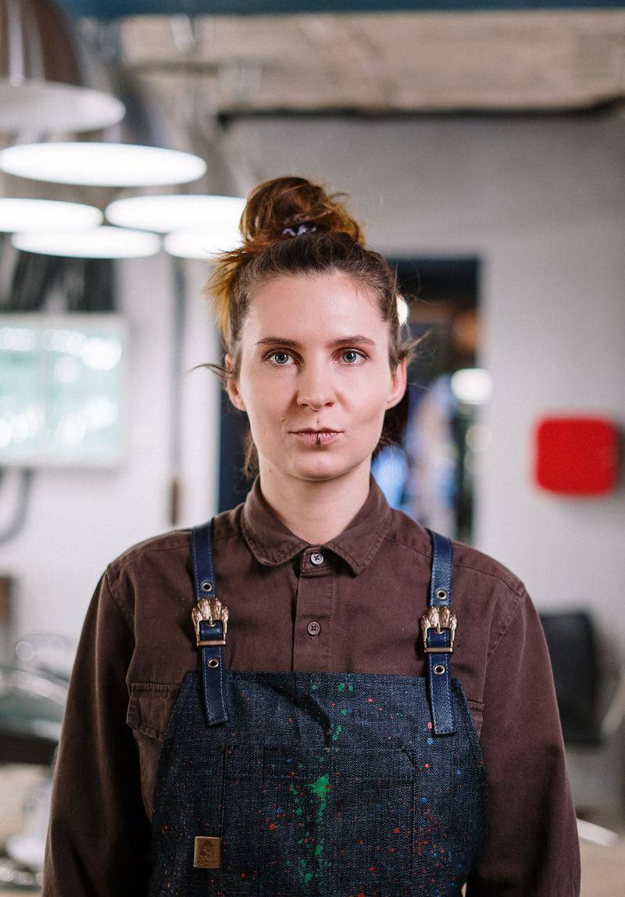
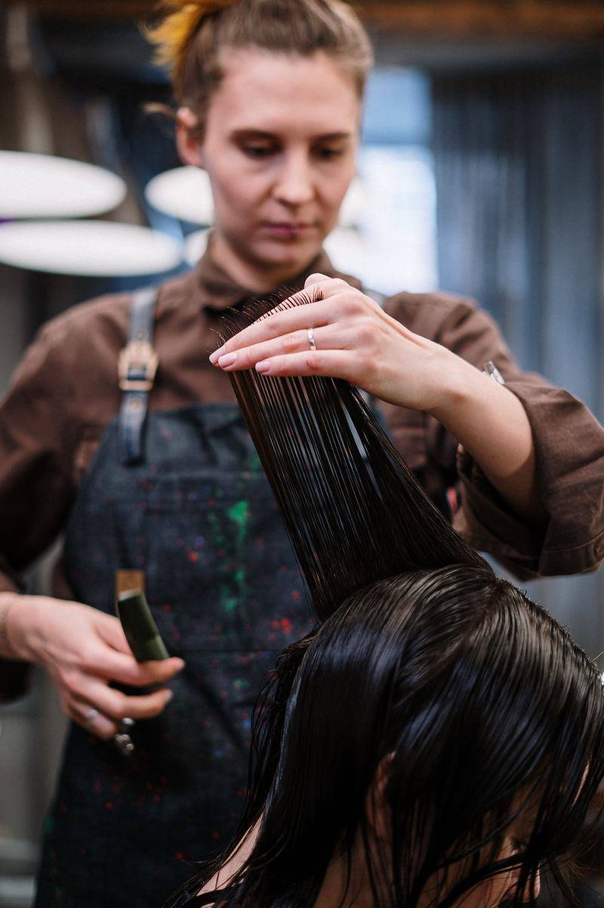
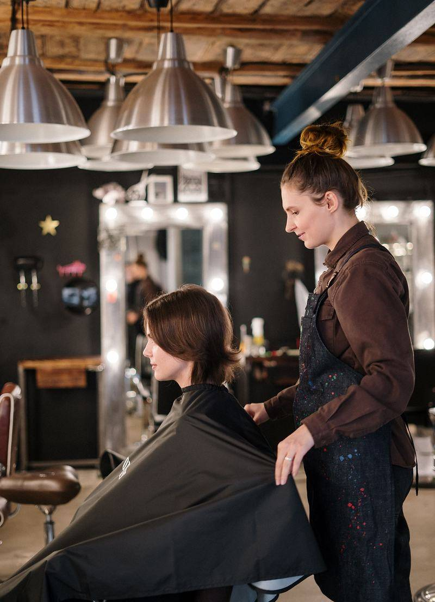

The barber
Aino Vartiainen.
A fictional name, written for this concept. The photographs are licensed stock, used to show how a small studio might introduce the person who holds the chair.

The chair
Cuts, finishes, and a preference for unhurried work.
Aino is written as the studio’s only barber — short hair, longer hair, and the quieter work of a finish. The page is about presence in the room, not a roster of invented staff or a list of awards.
No years in the trade are claimed here, and no client reviews are invented. On a live site, this is where a short, honest biography would sit.

Working photographs from the same studio sitting. The name on this page remains fictional.

In the room
One sitting at a time.
The concept keeps the calendar simple: the room is held for the person in the chair. A next appointment would be offered at the end of a visit, never as a crowded waiting list.